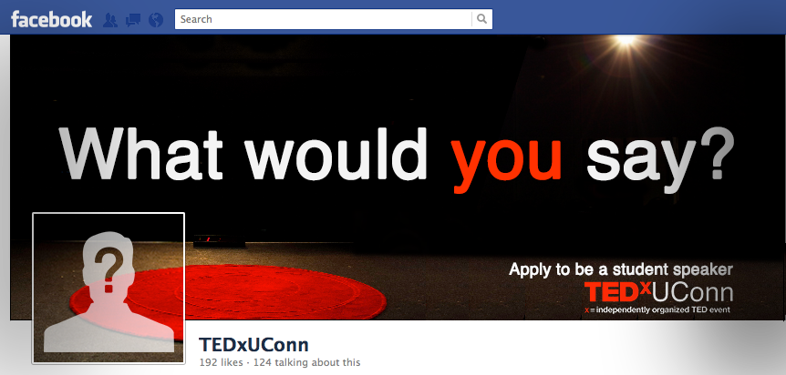
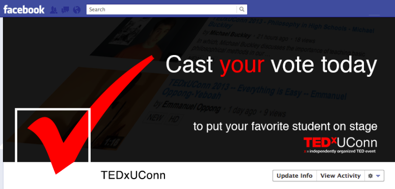
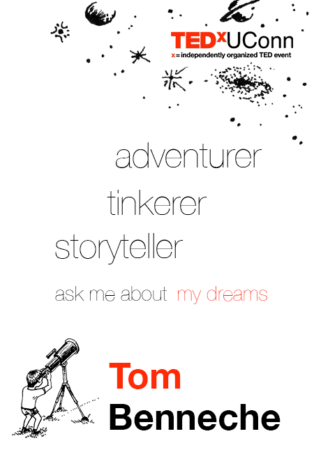
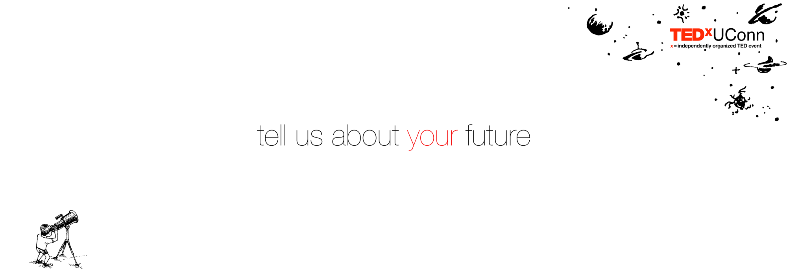

The first major design task was building a website. The site had to communicate what TED, TEDx, and specifically TEDxUConn were. In designing the layout, I tried to think a lot about informational hierarchy. Whichever event we were currently advertising would take the front seat on the homepage.
With the speakers and team page I wanted to give a lot of background on each person, showcasing the incredible talent we were bringing in as well as the personality of our team.
The student speaker page initally contained embedded videos from students who were competing for a spot in our speaker lineup, on which visitors could vote to send their favorite student on stage. Currenlty it is showcasing the three students ultimately chosen to give talks.
This flyer was made to reflect the same modern, clean feel as the website.
The goal here was to draw the users eyes first to the date (by mirroring the format of the logo), and next to where they can apply. Details about the event were intentionally set back, so that the calls to action were seen first.
For advertising the student speaker competition, I played with a few facebook profile picture/cover photo combinations—one for applications and one for voting.
 In designing the event day materials, I decided to rethink our whole treatment of the theme. "Future in Focus" initially drew us toward sleek and modern design—aligning with TED's strict style guide.
With the event banners, nametags, and programs, I wanted to focus on the more interesting question: why are we curious about the future? From there we settled on childish wonder, which led to my favorite creation of the TEDxUConn team— a little boy with a telescope, peering out into the night's sky. Our team illustrator brought this idea to fruition, and helped create was I think was a really inspiring environment.
The nametags were designed to be playful, with directionality in mind. Most prominent is the name, positioned next to the little telescope boy. From there your eyes follow his toward the sky, passing on the way a unique set of words chosen from each guest's application
This 10-foot banner hung outside the front entrance, with markers for guests to write with. The immense negative space emphasized the feeling of naive astonishment, and provided ample space for guests to share their thoughts on the future.

I wanted the program booklet to tell a story